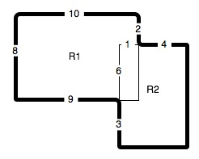

Saving Your Program
We can write a program in the Python Shell like we did in the last program, but we can't fix mistakes and we can't save it. To be able to save it we want to create an edit window. To start this lesson start IDLE like you did in the last lesson, but then go to menu item File-> New Window. A new window like this will appear on the screen.
You Try It
You can type this program into the window that appears and then save it in one of your folders. Once you have saved it you can run it by pressing F5 or by selecting Run->Run Module from the IDLE menu.